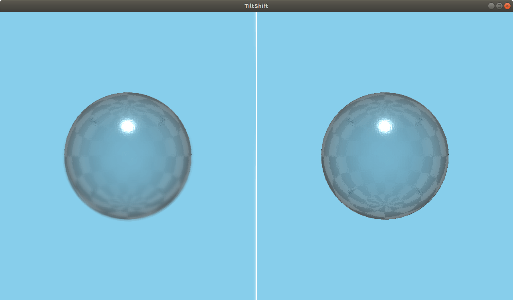

TiltShift QML Type
A tilt shift blur effect. More...
| Import Statement: | import QtQuick3D.Effects 6.7 |
| Status: | Deprecated since 6.5 |
This type is deprecated since QtQuick3D.Effects 6.5. We strongly advise against using it in new code.
Properties
- blurAmount : real
- focusPosition : real
- focusWidth : real
- isInverted : bool
- isVertical : bool
Detailed Description
Use ExtendedSceneEnvironment, MultiEffect, or user-defined effects via the Effect type instead.
Warning: All pre-made standalone effects in QtQuick3D.Effects are considered deprecated starting with Qt 6.5. Applications are advised to use ExtendedSceneEnvironment or MultiEffect instead, when applicable, or alternatively provide their own custom post-processing effect via the Effect type.

The TiltShift effect simulates depth of field in a simple and performant manner. Instead of blurring based on the depth buffer, it blurs everything outside a horizontal or vertical strip of the scene.
See also DepthOfFieldHQBlur.
Property Documentation
blurAmount : real |
Specifies the strength of the blur effect. Values above 4 may cause artifacts. The range is [0...10]. The default value is 4.
focusPosition : real |
The placement of the focus bar in normalized coordinates. The range is [0...1]. The default value is 0.5, corresponding to the middle of the scene.
focusWidth : real |
Specifies the width of the in-focus area in normalized coordinates. Objects within this range of focusPosition will be in focus. The range is [0...1]. The default value is 0.2.
isInverted : bool |
Inverts the blur area, so the center is blurred instead. The default value is false.
isVertical : bool |
Makes the effect work vertically instead of horizontally. The default value is false.